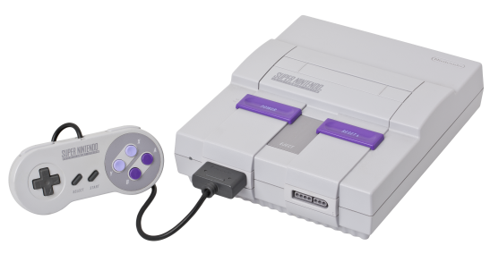

Top 10 SNES/NES Games
Welcome to the ultimate countdown of 8-bit and 16-bit classics—a tribute to the golden era of Nintendo when tight controls, unforgettable chiptune soundtracks, and pure gameplay ruled the living room. With hundreds of titles across the NES and SNES libraries, separating genuine masterpieces from pure nostalgia can feel like a quest of its own. This site cuts through the clutter to bring you two personal, hand-picked rankings: my Top 10 Single-Player adventures built for deep, solo marathon sessions, and my Top 10 2-Player favorites made for chaotic couch co-op and head-to-head competition. Whether you are hunting for iconic heavy-hitters or overlooked hidden gems, dive into each list to explore what makes these games tick, see how each console shines, and discover why these twenty timeless cartridges still deserve a spot on your screen today.


My Experience:
I have been playing classic Nintendo games practically my whole life, drawn in by both the genuine challenge they demand and the unmatched nostalgia they bring every time you hit Start. Unlike modern titles that hold your hand through endless tutorials, 8-bit and 16-bit games test your reflexes, patience, and pattern recognition in a way that feels truly rewarding to beat. My personal go-to way to play is emulating them on my Wii. In my opinion, it is hands-down the best setup for retro gaming—holding the standard Wii Remote sideways mimics the exact button layout and comfortable feel of an original NES controller, while plugging in the Classic Controller gives you the familiar diamond face buttons and shoulder triggers needed to play SNES titles properly. While side-scrolling platformers will always be my personal favorite genre, I made sure to pack these rankings with plenty of variety and strong alternatives for anyone looking for different styles of gameplay. (Pro tip: before jumping into an older title, take a minute to look up the manual or control scheme—retro games rarely explain every hidden move or mechanic on-screen!)